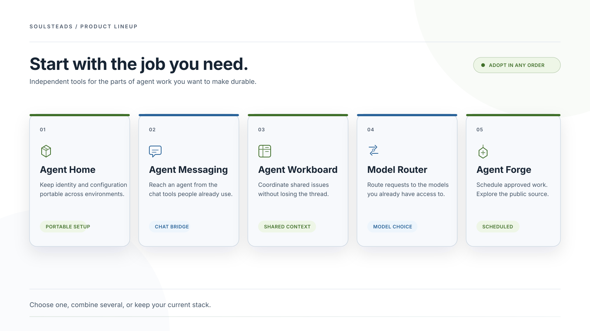
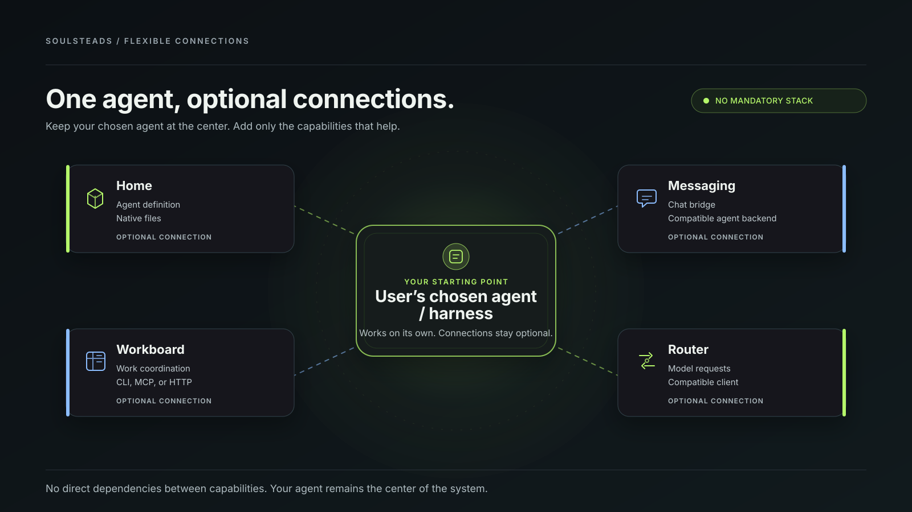

Agent Workboard · Tagged source v0.1.0 (source-only, not a binary download)
Start with a ready local Workboard
Create a useful local board using SQLite. No model or remote database is needed for this ready-to-use path.
Open-source tools for people running one agent or coordinating several. Keep your harness. Pick the tools that fit the work.
00 / START HERE
Choose one independent path. The links open component-owned guides; setup commands stay with those components. Tagged sources are source-only, and source previews are pinned to reviewed commits. These are not binary downloads.
Agent Workboard · Tagged source v0.1.0 (source-only, not a binary download)
Create a useful local board using SQLite. No model or remote database is needed for this ready-to-use path.
Agent Messaging · Tagged source v0.2.0 (source-only, not a binary download)
Follow the documented Telegram path using the existing coding-agent harness. This connector path adds no agent runner or model setup.
Agent Forge · Source preview (main at reviewed commit 9bcc307946730ac5c00c1a5552790504ba2fea4a)
Use Forge's documented no-model example with its own PostgreSQL database, separate from production. Follow the component guide for the supported setup.
Agent Home · Source preview (main at reviewed commit 31d1fc26fe210d82fd414780a4aeae78efea185f)
Review a Hermes import in Home's default read-only inspection mode before deciding whether to apply it. The source stays unchanged during inspection; use the component guide for supported inputs and boundaries.
01 / THE LINEUP
Choose one tool. Each has its own setup and can run without the others.
Public source checked 2026-11-19 on GitHub. Source availability does not imply a supported deployment.

Keep your agent’s identity, instructions, skills, and configuration in files you control, with local Git history.
Version 0.1.0 on main. GitHub release v0.1.0 is source-only.
uv for the install command shown (the README also documents pipx)soulsteads config <agent> --sync.soulsteads verify is an offline structural check. It never launches an agent, so it does not prove that a harness loaded the configuration.uv tool install git+https://github.com/soulsteads/soulsteads-agent-home.git@54851fe43a18ffe15598277c917ab9edb734db8a
soulsteads create helper --runtime opencode
soulsteads verify helper
soulsteads run helper --dry-runChoose pi, claude, or codex instead of opencode if that is the harness you use. Once it is installed and authenticated, launch it with soulsteads run helper.
Use your existing coding agent from Telegram, Matrix, Mattermost, Slack, Discord, WhatsApp, or the built-in web interface.
Version 0.2.0 on main. GitHub release v0.2.0 is source-only. Use main for current setup; the older release branch is 0.1.0.
main (0.2.0) adds GitHub Copilot CLI./cancel is not a kill switch. In the known Codex cancellation case a shell process can keep running, and unattended remote command execution is not qualified.main) let one conversation ask another already-attached agent in the same bridge process a question. Nothing is queued, there is no offline inbox, and there is no cross-machine transport. It is not a remote agent network.Follow the guide for the connector and runtime you actually use. Telegram setup is guided for Claude Code and Codex on Linux; other setups are manual. Start with a dedicated account and a harmless allowed-user prompt.
Messaging setup guide · Know before you connectGive agents a shared issue board with dependencies, one active claim per issue, and a dashboard people can follow.
Version 0.1.0 on main. GitHub release v0.1.0 is source-only.
done issue is coordination state, not independent proof that something happenedworkboard web listens on 127.0.0.1:7878 by default. Put any remote access behind an HTTPS reverse proxy.Use an absolute database path so every local process opens the same board. Its parent directory must already exist.
cargo install --locked --path .
export WORKBOARD_DB="$PWD/workboard.sqlite3"
export WORKBOARD_ACTOR="coordinator"Run these in a fresh database, with WORKBOARD_API_KEY unset.
workboard run '{"op":"agent_register","id":"coordinator","name":"Coordinator"}'
workboard run '{"op":"agent_register","id":"forge","name":"Forge","capabilities":["rust","tests"]}'
workboard run '{"op":"project_create","key":"AG","name":"Agent platform"}'
workboard run '{"op":"issue_create","project":"AG","kind":"epic","title":"Ship agent coordination"}'
workboard run '{"op":"issue_create","project":"AG","kind":"story","title":"Implement the work loop","parent":"AG-1","acceptance_criteria":["Integration tests pass"]}'
workboard run '{"op":"issue_transition","key":"AG-2","expected_revision":1,"state":"ready"}'Save the returned api_key privately; it is shown only once. Then open http://127.0.0.1:7878 and enter that key.
workboard run '{"op":"api_key_create","agent":"forge","label":"Forge workstation"}'
workboard webThe ready story appears on the board, waiting for an agent to claim it. Leave the server running and connect a worker from another terminal or client.
Create a sandbox board · Connect your agents · Command and workflow referenceRoute compatible requests to existing model servers through stable aliases, per-client access rules, and shared capacity limits.
Version 0.1.0 on main. GitHub release v0.1.0 is source-only.
4001 is reserved.Use an existing inference server with an exact model ID and verified limits. Validate the policy with slotline --check-config before starting. Configuration validation does not prove inference.
Run one-off or recurring workflows, inspect step results, and recover carefully after an interruption.
Version 0.1.0 on main. Build from main; no GitHub release or prebuilt binary.
jq for the upstream quick-start exampleUse the upstream quick start to initialize a fresh Forge home and run the sample workflow against a disposable PostgreSQL database. Check the output before adding a schedule, model, or plugin.
Run the first workflow · Requirements and verificationTurn speech into agent input and agent output into understandable speech.
No public implementation to install.
Not available — The public repository is empty.
Publish, discover, and install reviewed, versioned Agent Skills.
Version 0.1.0 on main. Untagged source preview; no prebuilt binary.
Install from source and try the quick start
uv or pipFrom the pinned source checkout, install the CLI and follow the disposable quick start. No shared registry or changes to your harness are needed.
Install from source and try the quick startA reserved project for a Soulsteads agent runtime. Use an existing supported harness with Home or Messaging today.
Reserved public repository; no implementation to install.
Not available — The public repository is empty.
02 / HOW IT FITS

Keep your chosen harness. Add only the tools you need, and configure each connection explicitly.
acp.agentHome sets a working directory, not an Agent Home import. Do not move existing session bindings as part of a fresh setup.Products share neither an installer nor a database. Each has its own setup and recovery path.
Messaging's local agent tools are a bounded exchange between already-attached agents in one bridge process on one machine. They are not a cross-machine agent network, and Soulsteads has no agent network product.
03 / USE WHAT YOU ALREADY LIKE
Pick your agent and your chat. Messaging includes these connectors; every service needs its own configuration and credentials.
CHOOSE YOUR RUNTIME
Messaging also accepts compatible ACP servers through a custom command. Install and authenticate runtimes separately.
MEET YOUR AGENT HERE
*Guided setup: Telegram + Claude Code or Codex on Linux. Early release; not every combination is live-tested.
04 / GET STARTED
Follow the project’s instructions yourself, or ask a coding agent to plan and verify setup. There is no suite installer.
Keep my agent’s identity and instructions portable
Talk to my coding agent from chat
Give multiple agents one shared issue board
Give compatible clients one endpoint for existing models
Run recurring workflows and inspect what happened
Publish, find, and update agent skills with clear versions
AGENT-ASSISTED SETUP
Review the skill first. Copy its directory to your agent’s documented skills location, or ask your agent to read the SKILL.md explicitly from a checkout. Copying a file does not grant permission to install or start anything.
Help me set up one Soulsteads tool.
Read skills/soulsteads-setup/SKILL.md from the public
soulsteads/soulsteads repository. Ask which tool I want.
Check its reviewed source and prerequisites, then show
me a plan before making changes. Keep tokens private;
never ask me to paste them in chat. Ask before starting
services, changing existing state, or making live requests.
Report what passed and what remains untested.05 / STRAIGHT ANSWERS
Open tools should come with clear boundaries. Here's what you're getting—and what you're not.
No. Every product is meant to be useful on its own; start with one and add another only if it helps. Independence does not mean no dependencies: Messaging needs a harness and a chat account, and Model Router needs an inference server. It means those needs never force you to adopt the rest of Soulsteads.
Agent Home, Agent Messaging, Agent Workboard, Model Router, Agent Forge, Agent Skillstore have public source and setup guides. Agent Forge is an early preview. Agent Skillstore is an early preview. Agent Voice, Agent Harness have no public implementation to install.
No. The published tools run on your machine. You bring your own harness, model access, chat accounts, and credentials. Your model and messaging providers' costs and privacy policies still apply.
No. Agent Home and Agent Messaging do not sandbox your agent: it keeps its machine permissions. Keep secrets out of tracked files, and use an account and workspace you are comfortable giving the agent.
Messaging's /cancel is not a kill switch. In the known Codex cancellation case a shell process can keep running, and unattended remote command execution is not qualified. Read the Messaging README before connecting a powerful agent.
Agent Home has an optional Hermes importer. Inspect an explicitly selected source first; applying creates a fresh home, not a live messaging cutover. Unsupported settings are reported, and incomplete imports need acknowledgement.
Read the import guideNo. Messaging's optional local agent tools let one conversation ask another already-attached agent on the same machine a question, with nothing queued and no cross-machine delivery. A separate agent network is a possible future decision, not a product.
GitHub releases for Agent Home, Agent Messaging, Agent Workboard, Model Router are source-only. Agent Forge, Agent Skillstore can be built from public source but have no tagged release. No prebuilt release assets were listed for these tools.
Agent Home: Apache 2.0; Agent Messaging: Apache 2.0; Agent Workboard: Apache 2.0; Model Router: Apache 2.0; Agent Forge: Apache 2.0; Agent Skillstore: Apache 2.0. See each repository’s license and notices.
BUILT FOR PEOPLE WHO BUILD